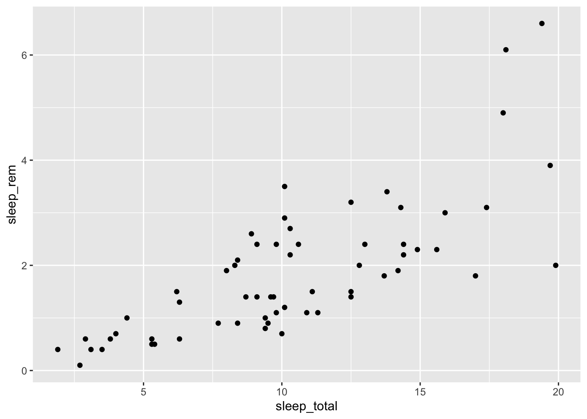

library(ggplot2)
glimpse(msleep)## Observations: 83
## Variables: 11
## $ name <chr> "Cheetah", "Owl monkey", "Mountain beaver", "Greate…
## $ genus <chr> "Acinonyx", "Aotus", "Aplodontia", "Blarina", "Bos"…
## $ vore <chr> "carni", "omni", "herbi", "omni", "herbi", "herbi",…
## $ order <chr> "Carnivora", "Primates", "Rodentia", "Soricomorpha"…
## $ conservation <chr> "lc", NA, "nt", "lc", "domesticated", NA, "vu", NA,…
## $ sleep_total <dbl> 12.1, 17.0, 14.4, 14.9, 4.0, 14.4, 8.7, 7.0, 10.1, …
## $ sleep_rem <dbl> NA, 1.8, 2.4, 2.3, 0.7, 2.2, 1.4, NA, 2.9, NA, 0.6,…
## $ sleep_cycle <dbl> NA, NA, NA, 0.1333333, 0.6666667, 0.7666667, 0.3833…
## $ awake <dbl> 11.9, 7.0, 9.6, 9.1, 20.0, 9.6, 15.3, 17.0, 13.9, 2…
## $ brainwt <dbl> NA, 0.01550, NA, 0.00029, 0.42300, NA, NA, NA, 0.07…
## $ bodywt <dbl> 50.000, 0.480, 1.350, 0.019, 600.000, 3.850, 20.490…library(stringr) # for string manipulation
library(ggimage) # for custom icons
msleep %>%
drop_na(vore) %>%
mutate(vore = paste(vore, "vore", sep = ""),
image = paste(vore, ".png", sep = "")) %>%
ggplot(aes(x = sleep_total,
y = sleep_rem,
color = vore)) +
geom_image(aes(image=image), size=.05) +
geom_text(aes(label=name),
nudge_y = 0.25,
size = 2) +
theme(legend.position = "none")## Warning: Removed 20 rows containing missing values (geom_image).## Warning: Removed 20 rows containing missing values (geom_text).